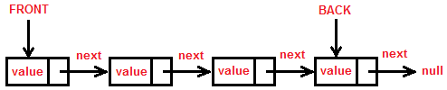
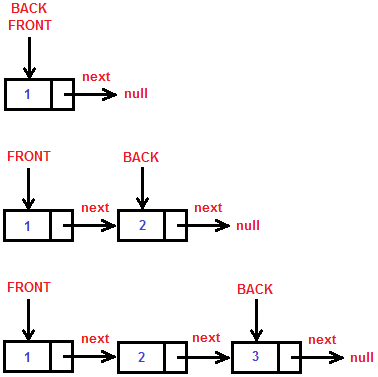
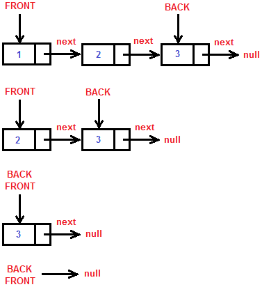
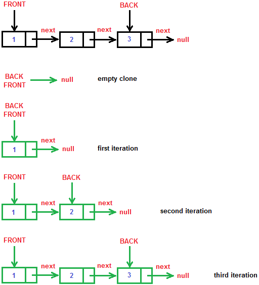

Dynamic Queue Implementation in C#
A dynamic queue is a queue that is implemented with nodes. Nodes consist of two things: value and link to another node.
The following image illustrates the implementation:

The most left node is the front of the queue, and the most right one is the back of the queue. Every node is connected to the one right of it. The back of the queue points to null.
You can see the implementation of the queue here.
Lets jump to the explanation.
First lets see how the Node is implemented.
private class Node
{
public T Item { get; set; }
public Node Next { get; set; }
public Node(T item)
{
this.Item = item;
this.Next = null;
}
public Node(T item, Node previous)
{
this.Item = item;
this.Next = null;
previous.Next = this;
}
}We have an Item which represents the value of the node. The link is a simple reference to a node and is called Next. We also have two constructors. One that creates a node with some item and has a pointer to null. The other one creates the same node, but the difference is that a previous node is linked to the one that was just created. The Node class is a private class in the Queue class which I called CustomQueue.
Now lets jump to the CustomQueue.
Lets see what fields, constructors and properties we have.
private Node front;
private Node back;
private int count;
public CustomQueue()
{
this.front = null;
this.back = null;
this.count = 0;
}
public int Count
{
get
{
return this.count;
}
}We have references(pointers) to the front and the back of the queue. There is a count field that has a Count property with getter only (we don't want to mess up the count from the outside). We also have only a single default constructor that makes an empty queue by initializing the front and the back with null and count with 0.
Now lets see the basic methods.
public void Enqueue(T item)
{
if (this.front == null)
{
// We have empty queue
this.front = new Node(item);
this.back = this.front;
}
else
{
Node newNode = new Node(item, this.back);
this.back = newNode;
}
this.count++;
}The “Enqueue” method adds a new element to the front of the queue. First we check if the queue is empty (if so we make a queue with only one node that points to null). If the queue is not empty, we create a new node and tell the back of the queue to start pointing at the node we've just created. This is accomplished with the second constructor. We have to tell that the new back of the queue is the new node. Last we increment the count.
Consider the following code:
CustomQueue<int> queue = new CustomQueue<int>();
queue.Enqueue(1);
queue.Enqueue(2);
queue.Enqueue(3);In the memory that looks much like this:

public T Dequeue()
{
if (this.count == 0)
{
// We have empty queue
throw new InvalidOperationException("The queue is empty");
}
T result = this.front.Item;
this.front = this.front.Next;
this.count--;
return result;
}The “Dequeue” method removes the front of the queue and returns the value of it. We first make a check if the queue is empty (if so we throw an InvalidOperationExceltion). If the queue is not empty, then we remove the front. It's simple, we just initialize the front with it's link. The garbage collector will take care of the node that is discarded from the queue. We also have to decrement the count and return the result (the value of the removed element).
Consider the following code:
CustomQueue<int> queue = new CustomQueue<int>();
queue.Enqueue(1);
queue.Enqueue(2);
queue.Enqueue(3);
queue.Dequeue();
queue.Dequeue();
queue.Dequeue();The dequeue process should look something like this:

public T Peek()
{
if (this.count == 0)
{
// We have empty queue
throw new InvalidOperationException("The queue is empty");
}
return this.front.Item;
}The “Peek” method gets the value of the front of the queue. Again there is a check for empty queue and an exception throw if it's empty.
public void Clear()
{
this.front = null;
this.back = null;
this.count = 0;
}The “Clear” method clears the queue (makes it empty). It's just like the constructor. We initialize the front and the back with null and the count with 0.
CustomQueue implements the ICloneable interface. It's useful to clone the queue sometimes.
public object Clone()
{
CustomQueue<T> clone = new CustomQueue<T>();
Node currentNode = this.front;
while (currentNode != null)
{
// We have non-empty queue
clone.Enqueue(currentNode.Item);
currentNode = currentNode.Next;
}
return clone;
}The “Clone” method creates a deep copy of the queue. How do we do that? We create an empty queue named “clone”. If the original queue is empty we just return the empty clone queue. If it is not empty however, we have to make the deep copy. It's very simple. We have a reference(node) called “currentNode” that first points to the front of the original queue. This node helps us to walk through the original queue from the front to the back. We say this: “while currentNode != null (we haven't reached the end of the queue) - enqueue the value of the current node we've reached into the clone queue and go to the next node of the original queue”. Then we return the clone.
It looks like this:

I've also added some extension methods in the CustomQueue class. They are helpful, plus helped me for the unit tests.
public override string ToString()
{
StringBuilder result = new StringBuilder();
Node currentNode = this.front;
while (currentNode != null)
{
result.Append(currentNode.Item);
currentNode = currentNode.Next;
}
return result.ToString();
}
public T[] ToArray()
{
T[] result = new T[this.count];
Node currentNode = this.front;
for (int i = 0; i < result.Length; i++)
{
result[i] = currentNode.Item;
currentNode = currentNode.Next;
}
return result;
}“ToString” and “ToArray” are much like the clone method. We are walking through the original queue and the value of the current node we've reached is appended in a StringBuilder in the first case, and put in an array in the second case.
The CustomQueue also implements the IEnumerable<T> interface so that the queue can
be walked with a foreach loop.
public IEnumerator<T> GetEnumerator()
{
Node currentNode = this.front;
while (currentNode != null)
{
T result = currentNode.Item;
currentNode = currentNode.Next;
yield return result;
}
}
IEnumerator IEnumerable.GetEnumerator()
{
return this.GetEnumerator();
}The IEnumerable and IEnumerator interfaces are hard to explain and this post does not concern them, so I will stop here. Maybe I will make a post on how to implement these interfaces the hard way and the easy way (here I've used the easy way). That's all. Hope it was useful.